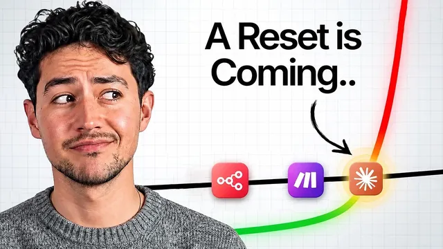

2027년에도 AI 자동화가 돈이 될까?

원본 영상 보기 →
- "만들 줄 안다"의 값은 빠르게 0에 가까워져요
- 지식 격차로 버는 장사는 끝나갑니다
- 자동화 산업은 오히려 오래 버팁니다, 대신 모습이 바뀌어요
한 줄 요약
AI 자동화로 1천만 달러 가까이 번 Nick Saraev가 "이 일은 영원하지 않아요"라고 말합니다. 그런데 결론이 의외예요. 모든 지식 노동이 자동화되는 세상이라면, 자동화를 해주는 쪽이 오히려 가장 오래 버틴다는 거죠. 2027년은 역사상 가장 돈이 되는 해이자 내리막의 시작점이 될 거라고 봅니다.
전체 내용 정리
벤치마크가 6개월 만에 따라잡혔어요
Nick은 업계 사람들이 손해 볼까 봐 부정적인 얘기를 잘 안 꺼낸다고 지적합니다. 그러면서 근거 두 가지를 꺼내요.
첫째는 벤치마크입니다. Automation Bench와 GDPval(자동화 능력을 재는 평가 지표)이 갑자기 등장했는데, 모델 점수가 0점에서 50~60%까지 오르는 데 6개월이 안 걸렸어요. 매달 5~10%씩 오른 셈이니, 이대로면 12월에서 3월 사이에 100%를 찍기 시작합니다. 100점이 곧 완벽하다는 뜻은 아니지만, 일부러 어렵게 만든 시험이 포화됐다는 신호죠.
100배 어렵다는 V2가 나와도 1년이 아니라 2~3개월이면 똑같이 포화될 거라고 봅니다. 예전엔 API 문서와 엔드포인트를 알려주고 커넥터를 하나하나 잡아줘야 했어요. 지금은 "내 HVAC(냉난방공조) 사업 웹사이트 자동화 좀 해줘" 한 마디면 꽤 돌아갑니다.
웹사이트 업계가 먼저 겪은 일이에요
예전에 웹사이트를 만들려면 코딩에 호스팅 인프라, DNS 설정, TXT 레코드까지 알아야 했습니다. 그만큼 전문가에게 큰돈을 낼 이유가 있었죠. 지금은 AI에게 부탁하거나 Wix·Squarespace로 대부분 직접 합니다.
자동화도 같은 길을 가고 있어요. "이메일 자동화 어떻게 하지?"가 "Claude, 이메일 자동화 어떻게 해?"로 바뀌었고, 1년 반 전에 1만 달러씩 들던 토큰 비용은 10센트가 됐습니다.
그렇다고 돈을 못 번다는 얘기는 아닙니다. Nick이 아는 한 사업자는 평범한 HTML·CSS 사이트만으로 정부 기관과 유명 브랜드를 고객으로 두고 수십만 달러짜리 계약을 땄어요. 비결은 기술이 아니라 영업과 마케팅이었습니다. 앞으로 이 바닥에서 경쟁하려면 영업이든 제품이든 한 분야에서 정말 비범해야 한다는 거죠. 대부분은 그럴 수 없으니, 특정 상품 하나로 먹고살겠다는 기대는 낮추는 게 맞습니다.
고객이 더 이상 모르지 않습니다
예전엔 업계는 AI를 알고 고객은 몰랐어요. 그 격차가 곧 마진이었습니다.
Nick의 추정으로는 1년 반 전만 해도 세계 인구의 80% 정도가 제대로 된 유료 AI를 써 본 적이 없었는데, 지금은 70% 가까이로 내려왔다고 해요. AGI 시대엔 이게 조금씩이 아니라 하룻밤 사이에 50%까지 떨어질 수 있습니다. 뉴스에 AI 데모가 쏟아지면 모두가 AI가 뭘 할 수 있는지 알게 되니까요.
그러면 "맞춤형 PDF 뚝딱 만들어 드릴게요" 같은 제안은 더 이상 인상적이지 않습니다. 바닥은 계속 올라가거든요. 제자리에 서 있으면 사실상 내려가는 겁니다. 투자로 3~4%를 못 내면 인플레이션 때문에 구매력이 깎이는 것과 같아요.
그런데도 자동화가 남는 이유
흥미로운 건 결론이 "그래도 할 만하다"라는 점이에요.
벤치마크 포화와 지식 격차 축소는 자동화 업계만의 일이 아닙니다. 회계·마케팅·영업·IT·SaaS·디자인까지 사무직 지식 노동 전체에서 벌어지고 있어요. 부동산 중개인, 자동차 딜러, 모기지 중개인처럼 전문 지식과 위험 비대칭에 기대던 중개 업무는 이미 대체되는 중이고요.
모든 노동이 자동화되는 세상에서 산업 하나만 고를 수 있다면, 회계를 고를까요 아니면 그 회계를 대체하는 쪽을 고를까요? Nick은 당연히 후자라고 합니다. 자동화의 정의 자체가 "기술로 노동을 줄이는 것"이니까요. 그는 이 업계를 경제라는 밭에 물을 대는 관개 수로에 비유합니다.
2027년 상반기, 오히려 문의가 몰릴 거예요
2027년 상반기엔 AI가 생각보다 훨씬 많은 일을 한다는 걸 깨닫고 허를 찔리는 사람이 많아질 거라고 봅니다. 그중 상당수는 돈은 있는데 사업에 치여 시간이 없던 사업가들이에요.
이들은 처음엔 기계보다 사람과 일하고 싶어 합니다. 그래서 구현을 도와줄 사람을 찾는 수요가 확 늘어나요. 경쟁사가 앞서가는 걸 본 사람들도 "따라잡아야겠다"며 전문가를 찾고요.
다만 찾는 게 달라집니다. 지금까지는 잠재 고객 발굴, 광고 소재, 자동 제안서, 파이프라인 관리 같은 인프라 구축이 중심이었어요. 누구나 뭐든 만드는 세상에선 "얼마나 빨리 만드느냐"보다 "무엇을 만들어야 하느냐"가 훨씬 비싸집니다. 2027년 이후는 자기도 모른다고 Nick은 솔직히 인정해요. 큰 변화의 시기엔 아는 척하는 사람에게 사람이 몰리지만, 대부분은 사실 모릅니다.
그래서 무엇을 바꿔야 할까요
Nick이 꼽은 다섯 가지입니다.
첫째, 드래그 앤 드롭 빌더는 줄어듭니다. make.com·Zapier·n8n·Power Automate 같은 도구요. Maker School이 프리랜서 플랫폼을 분석해 보니 이런 프로젝트 비율이, Claude Code·Codex로 만드는 내부 웹앱이나 컨설팅에 비해 꾸준히 떨어지고 있었어요.
둘째, 결과물을 더 무거운 매체로 옮기세요. 텍스트보다 이미지, 이미지보다 영상, 그리고 3D 시각화나 시뮬레이션이요. 에어컨 설치 기사가 현장에 있는 것처럼 작업하게 돕는 도구를 떠올리면 됩니다.
셋째, 구현에서 교육으로 옮기세요. 구현이 사라지진 않지만 비중이 70%에서 50%, 40%로 줄고 워크숍·팀 교육·기업 컨설팅이 그 자리를 채웁니다. Nick도 요즘은 팀들에게 Claude 기본 사용법과 Cowork 활용법을 가르치는 일이 늘었다고 해요.
넷째, 기회는 더 자주 오지만 더 빨리 닫힙니다. 그래서 일찍 발견해 먼저 뛰어드는 능력이 비대칭 수익을 만듭니다.
다섯째, 기술에 1시간을 쓴다면 영업·마케팅에는 100배를 쓰세요. 작년엔 10배였고 내년엔 1,000배일 수 있다고 합니다. "어떤 에이전트 도구가 제일 좋을까"가 아니라 "앞으로 두 달간 어떻게 더 팔까, 퍼널 어디서 새나, 고객이 어디서 이탈하나"를 고민해야 한다는 거죠.
핵심 인사이트
- "만들 줄 안다"의 값은 빠르게 0에 가까워져요: 벤치마크가 몇 달 만에 포화되고 누구나 말로 시키면 되는 시대엔, 구현 능력이 아니라 "무엇을 만들지" 고르는 판단이 돈이 됩니다.
- 지식 격차로 버는 장사는 끝나갑니다: 고객이 AI를 모르던 시절의 마진은 사라져요. 바닥이 계속 올라가니 제자리걸음은 곧 후퇴입니다.
- 자동화 산업은 오히려 오래 버팁니다, 대신 모습이 바뀌어요: 사무직 전체가 흔들릴 때 자동화를 돕는 쪽이 유리하지만, 그 값어치는 구축 대행에서 교육·컨설팅·영업력으로 옮겨갑니다.
오늘 당장 해볼 것
- 지금 외부에 맡기고 있는 반복 업무 하나를 골라, Claude나 ChatGPT에 "이 업무 자동화하려면 어떻게 해야 해?"라고 직접 물어보세요. 답이 어디까지 쓸 만한지 보면 감이 옵니다.
- 자동화 업체와 상담할 때 "구축만 해주시나요, 아니면 저희 직원이 직접 쓰고 고칠 수 있게 교육도 해주시나요?"를 꼭 물어보세요. 교육 포함 여부를 업체 고르는 기준에 넣는 겁니다.
- 이번 주에 '도구 고르고 세팅 공부한 시간'과 '고객 응대·홍보·후속 연락한 시간'을 각각 적어 보세요. 비율이 어느 쪽으로 기울어 있는지 보이면, 옮길 계획 하나는 바로 나옵니다.